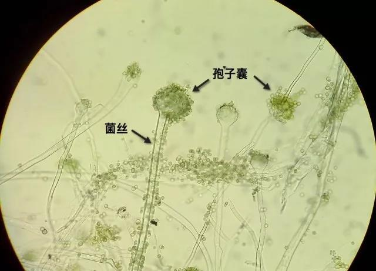

人文
地理
微生物
-
【酵母菌】 酵母是一种单细胞真菌，并非系统演化分类的单元。一种肉眼看不见的微小单细胞微生物，能将糖发酵成酒精和二氧化碳，分布于整个自然界，是一种典型的异养兼性厌氧微生物，在有氧和无氧条件下都能够存活，是一种天然发酵剂。一般泛指能发酵糖类的各种单细胞真菌，可用于酿造生产，也可为致病菌——遗传工程和细胞周期研究的模式生物。酵母菌是人类文明史中被应用得最早的微生物。目前已知有1000多种酵母，根据酵母菌产生孢子（子囊孢子和担孢子）的能力，可将酵母分成三类：形成孢子的株系属于子囊菌和担子菌。不形成孢子但主要通过出芽生殖来繁殖的称为不完全真菌，或者叫“假酵母”（类酵母）。
- 人类驯化度：
低 - 人工繁殖率：
易成活 - 物种多样性：
极丰富
-
【米曲霉】 米曲霉(Aspergillus oryzae)属于黄曲霉群，是曲霉属中的一个常见种。分生孢子头放射状，一直径150-300μm，也有少数为疏松柱状。分生孢子梗2mm左右。分生孢子梗长约2mm，近顶囊处直径达12-25μm，壁较薄，粗糙。顶囊近球形或烧瓶形，通常40-50μm。小梗一般为单层，12-15μm，偶尔有双层，也有单、双层小梗同时存在于一个顶囊上。分生孢子幼时洋梨形或卵圆形，老后大多变为球形或近球形，一般4.5μm，粗糙或近于光滑。米曲霉菌落生长快，10d直径达5-6cm，质地疏松。初呈白色、黄色，后转黄褐色至淡绿褐色，背面无色，分布甚广，主要在粮食、发酵食品、腐败有机物和土壤等处。是我国传统酿造食品酱和酱油的生产菌种。也可生产淀粉酶、蛋白酶、果胶酶。
 - 人类驯化度：
低 - 人工繁殖率：
一般 - 物种多样性：
极丰富